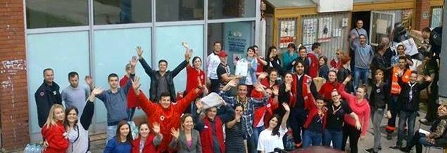

Adresa: Jahijela Fincija 14.
Telefon: 033/638-022
Fax: 033/638-023
E-mail: ck_ilidza@hotmail.com

Crveni križ općine Iliža je udruženje - humanitarna, dobrovoljna, neprofitna organizacija, ima svojstvo pravnog lica i konstituisana je u skladu sa Zakonom o Crvenom križu Federacije Bosne i Hercegovine .
Humanitarne ciljeve i zadatke izvršava u oblasti zdravstva, socijalne politike, vaspitanja, službe traženja i zaštite prava građana, a djeluje na osnovu misije i na principima međunarodnog pokreta Crvenog križa, Crvenog polumjeseca i Crvenog kristala, i to: humanosti, nepristrasnosti, neutralnosti, nezavisnosti, dobrovoljnosti, jedinstva i univerzalnosti.
U slučaju prirodnih i drugih nesreća, Crveni križ općine Iliža, kao sastavni dio jedinstvenog sistema zaštite i spašavanja, obavlja zadatke u skladu sa zakonima, Sporazumom o saradnji sa Civilnom zaštitom i drugim propisima.
U slučaju oružanog sukoba Crveni križ općine Iliža izvršava obaveze u skladu sa Ženevskim konvencijama i preporukama Međunarodne federacije društava Crvenog križa, Crvenog polumjeseca i Crvenog kristala.